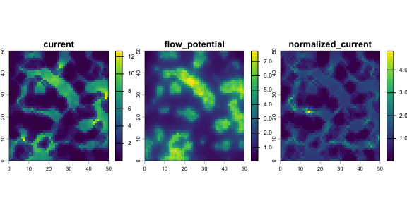
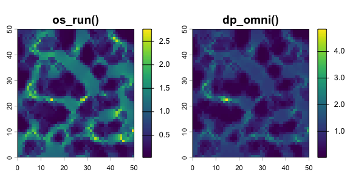
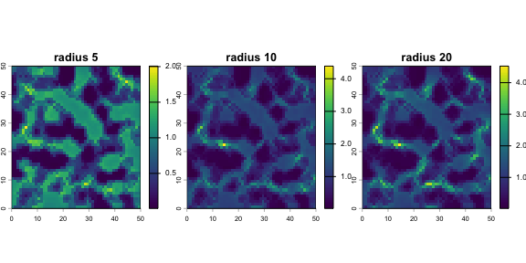
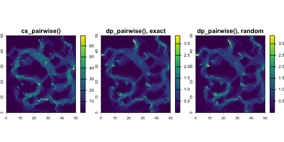
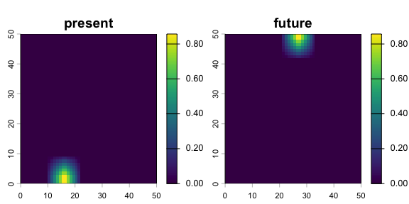
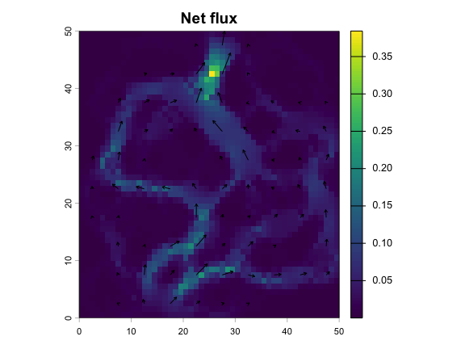
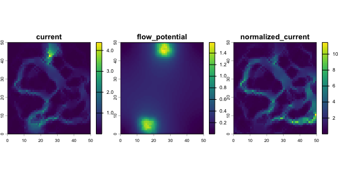

The dipole methods are circuitscaper’s own connectivity methods. They map pairwise, omnidirectional and cross-era connectivity on the same circuits Circuitscape builds, but instead of solving one circuit per pair, window or source, they factor the circuit once and solve many balanced source–sink pairs (“dipoles”) against it at a time, combined by superposition. A map takes one factorization and about 32 solves, whatever the number of pairs it covers.
Status: experimental. The dipole methods are new and not yet published. They are tested against exact answers (see Validation), but their interface may change, and their maps are of a related but different quantity from Circuitscape’s and Omniscape’s (see How the results differ).
| Function | Maps | Closest established method |
|---|---|---|
dp_omni() |
Omnidirectional connectivity among habitat within a dispersal radius | os_run() |
dp_pairwise() |
Connectivity among every pair of a set of focal nodes |
cs_pairwise() (cumulative current) |
dp_flux() |
Net flow from present to future habitat, with direction |
cs_advanced() with present sources and future
grounds |
dp_pathways() |
Routes between present and future habitat within dispersal reach |
os_run() with os_condition(future = )
|
dp_circuit() |
A factored circuit, to reuse across runs |
The first half of this article shows how to use them; the second
explains how they work. Installation and inputs are as for the rest of
the package (see vignette("getting-started")); the dipole
methods run in the same Julia session.
Omnidirectional connectivity
dp_omni() plays Omniscape’s role: connectivity among all
habitat cells within a dispersal radius of each other, with
no focal nodes. Its arguments mirror os_run()’s: a
resistance surface, a radius in pixels, and optionally a source-strength
surface such as habitat suitability (by default, conductance, as in
os_run()).
library(terra)
library(circuitscaper)
resistance <- rast(system.file("extdata/resistance.tif", package = "circuitscaper"))
result <- dp_omni(resistance, radius = 10, seed = 1)
result
#> class : SpatRaster
#> size : 50, 50, 3 (nrow, ncol, nlyr)
#> resolution : 1, 1 (x, y)
#> extent : 0, 50, 0, 50 (xmin, xmax, ymin, ymax)
#> coord. ref. : lon/lat WGS 84 (CRS84) (OGC:CRS84)
#> source(s) : memory
#> names : current, flow_potential, normalized_current
#> min values : 0.001761, 0.069517, 0.021525
#> max values : 12.301189, 8.540498, 4.388027
plot(result, nc = 3)
The three layers correspond to Omniscape’s:
-
current: how strongly connectivity among habitat within reach depends on each cell. Formally, it’s the square root of a kernel-weighted sum over habitat pairs of the squared current each pair sends through the cell (see What dp_omni() maps). It is not Omniscape’s cumulative current, though it ranks cells similarly. -
flow_potential: the same quantity on a circuit of uniform resistance, reflecting only where habitat is. -
normalized_current: current divided by flow potential: above 1 where the landscape channels flow, below 1 where it impedes it.
Here is the same analysis in Omniscape, with each method’s normalized current:
os <- os_run(resistance, radius = 10)
compare <- c(os$normalized_current, result$normalized_current)
names(compare) <- c("os_run()", "dp_omni()")
plot(compare, nc = 2)
# Spearman correlation between the methods' layers
rho <- function(a, b) {
cor(values(a, mat = FALSE), values(b, mat = FALSE),
method = "spearman", use = "complete.obs")
}
c(current = rho(os$cumulative_current, result$current),
flow_potential = rho(os$flow_potential, result$flow_potential),
normalized_current = rho(os$normalized_current, result$normalized_current))
#> current flow_potential normalized_current
#> 0.9762027 0.9773197 0.9501101The patterns match closely, but not exactly, because the two methods compute different quantities. On a larger, real suitability surface (Pinus edulis at 2 km, 0.73 million cells), current agreed at Spearman’s \(\rho \approx\) 0.95–0.98 and normalized current at \(\rho \approx\) 0.86, falling a little as the radius grew.
Reusing a circuit
Most of a run’s time is building and factoring the circuit (two
circuits with normalize = TRUE: the resistance surface and
the uniform one for flow potential). The dipole solves themselves are
cheap and hardly depend on the radius. To run several analyses on one
resistance surface — different radii, source strengths, species, seeds
or methods — build the circuit once with dp_circuit() and
pass it in place of the resistance surface:
circuit <- dp_circuit(resistance)
circuit
#> <dp_circuit> 2500 nodes, 9702 links, 1 connected component
#> grid: 50 x 50; with uniform circuit for flow potential
radii <- c(5, 10, 20)
sweep <- rast(lapply(radii, function(r) {
dp_omni(circuit, radius = r, seed = 1)$normalized_current
}))
names(sweep) <- paste("radius", radii)
plot(sweep, nc = 3)
The factorization stays in the Julia session. If Julia restarts (for
instance, when cs_setup() raises the thread count), the
circuit is rebuilt the next time it is used.
Accuracy and reproducibility
The maps are estimates with some sampling noise, which falls as \(1/\sqrt{\texttt{n\_draws}}\). Each result
carries its own noise estimate in the "halves" attribute:
the map is computed separately from the odd and the even draws, and the
two half-estimates compared on source cells, by Spearman correlation and
by median relative difference. Each half has half the draws, so its
noise is \(\sqrt{2}\) times the full
map’s, and the difference between two halves is \(\sqrt{2}\) times a half’s: the full map’s
typical relative error is about half the halves’ median relative
difference.
attr(result, "halves")
#> spearman median_rel_diff
#> current 0.9771919 0.13398254
#> normalized_current 0.9518182 0.09060579Two settings control accuracy:
-
n_draws(default 32): the number of solves. This is the one to raise for a less noisy map: 4 times the draws halves the noise, at 4 times the solve time (though still only a small part of the total for one run). -
n_dipoles(default \(10^5\)): the number of dipoles per draw. Beyond enough to cover the habitat pairs well, more dipoles don’t reduce the noise: a draw’s noise is set by the random signs, not by how many dipoles it holds. Values don’t depend onn_dipoleseither, so runs with different settings are comparable.
draws <- c(8, 32, 128)
noise <- t(sapply(draws, function(n) {
attr(dp_omni(circuit, radius = 10, n_draws = n, seed = 1), "halves")$median_rel_diff
}))
dimnames(noise) <- list(paste(draws, "draws"), c("current", "normalized_current"))
round(noise, 3)
#> current normalized_current
#> 8 draws 0.266 0.187
#> 32 draws 0.134 0.091
#> 128 draws 0.056 0.043On real landscapes at the default 32 draws, per-cell noise has been
about 6–12% in current and 3–10% in normalized current. It is larger
where current is weak, in larger radii’s normalized current, and on
landscapes where true connectivity varies little from cell to cell,
since there’s then less signal to rank. Check the halves when you run a
new landscape or setting, and raise n_draws if they
disagree more than you’d like.
Results are reproducible: they’re determined by seed,
the settings and the circuit, and don’t depend on the number of Julia
threads (beyond the last bits of floating-point rounding). If
seed is NULL, one is drawn from R’s random
number generator, so set.seed() works too; the seed used is
returned as the "seed" attribute. Random streams can change
between Julia versions.
Focal nodes
dp_pairwise() maps connectivity among every pair of a
set of focal nodes, like cs_pairwise()’s cumulative current
map. Pairwise Circuitscape solves one circuit per pair, so its time
grows with the square of the number of nodes; dp_pairwise()
solves 32 circuits whatever the number of nodes, each one carrying every
pair with a random weight. With method = "exact", it
computes the exact answer instead from one solve per node.
set.seed(1)
nodes <- spatSample(resistance, 30, xy = TRUE, na.rm = TRUE)[, 1:2]
random <- dp_pairwise(circuit, nodes, seed = 1)
exact <- dp_pairwise(circuit, nodes, method = "exact")
cs <- cs_pairwise(resistance, nodes)
pw <- c(cs$current_map, exact, random)
names(pw) <- c("cs_pairwise()", "dp_pairwise(), exact", "dp_pairwise(), random")
plot(pw, nc = 3)
c(random_vs_exact = rho(random, exact),
exact_vs_circuitscape = rho(exact, cs$current_map))
#> random_vs_exact exact_vs_circuitscape
#> 0.9953820 0.9720331As with dp_omni(), the quantity is squared rather than
absolute current, so dp_pairwise() ranks cells like
cs_pairwise() (on the 2 km P. edulis surface,
\(\rho\) = 0.98–0.997 for 25 to 200
nodes) without matching its values. It doesn’t give the resistance
matrix between nodes; use cs_pairwise() for that.
Focal nodes are given as for cs_pairwise(): a matrix of
coordinates, or a raster of positive integer IDs. Each node is one
cell.
Cross-era connectivity
The two cross-era methods take a present and a future source-strength surface, such as habitat suitability now and under a climate scenario. Here, the package’s example source and ground layers stand in for present and future habitat, at the bottom and top of the landscape:
present <- rast(system.file("extdata/source.tif", package = "circuitscaper"))
future <- rast(system.file("extdata/ground.tif", package = "circuitscaper"))
plot(c(present, future), nc = 2, main = c("present", "future"))
dp_flux() maps the net flow of the range shift: present
habitat injects one unit of current in all, and future habitat withdraws
one unit, each cell in proportion to its strength. It takes a single
solve, and the flow is signed, so the result includes its direction
(flow_x, flow_y):
flux <- dp_flux(circuit, present, future)
plot(flux$current, main = "Net flux")
a <- aggregate(flux[[c("flow_x", "flow_y")]], 5, mean, na.rm = TRUE)
xy <- xyFromCell(a, seq_len(ncell(a)))
v <- values(a)
len <- sqrt(rowSums(v^2))
s <- 4 / max(len, na.rm = TRUE)
ok <- which(len * s > 0.2) # skip arrows too short to draw
arrows(xy[ok, 1], xy[ok, 2], xy[ok, 1] + s * v[ok, 1], xy[ok, 2] + s * v[ok, 2],
length = 0.04)
Only the totals at each cell matter, not which present cell pairs
with which future cell, so net flux has no dispersal limit: it shows how
the range as a whole must move. dp_pathways() asks instead
which routes connect present habitat with future habitat within
dispersal reach: random dipoles, as in dp_omni(), with one
end in present habitat and the other in future habitat within
radius. It gives magnitude only, without direction.
pathways <- dp_pathways(circuit, present, future, radius = 45, seed = 1)
plot(pathways, nc = 3)
Radius units
By default radius counts cells, as in
os_run(). With radius_units = "km" it is a
distance in kilometres: great-circle distance between cell centres on
longitude/latitude grids, where the kernel narrows in degrees of
longitude towards the poles, or distance in the coordinate system’s
units on projected grids.
Performance and memory
The time is mostly one or two sparse factorizations (Cholesky,
through Julia’s SuiteSparse) and the solves, both parallel over Julia’s
threads; set the number with cs_setup(threads = ). It
barely depends on the radius or the number of focal nodes. Timings on a
10-core MacBook Pro with 68 GB of memory, 10 threads,
dp_omni() with normalize = TRUE at the default
32 draws of \(10^5\) dipoles, on
synthetic suitability surfaces:
| Cells | dp_circuit() |
dp_omni() with the circuit |
Peak memory (Julia) |
|---|---|---|---|
| 0.73 million | 3 s | 4 s | 4 GB |
| 7 million | 45 s | 34 s | 29 GB |
| 18 million | 3.0 min | 2.2 min | 40–45 GB |
A first dp_omni() call on a raster includes building the
circuit, so it takes about the sum of the two columns. Starting Julia
adds a few seconds once per session; the dipole methods don’t need the
Circuitscape and Omniscape packages, so a session that only uses them
skips loading and warming those up.
For comparison, on the 0.73-million-cell P. edulis surface
on the same machine, os_run() on 10 threads took 48–116 s
for radii of 15–120 cells (with block sizes of 1–11 chosen for each
radius), and cs_pairwise() took 13 minutes for 200 focal
nodes on one thread, where dp_pairwise() takes a few
seconds for any number of nodes. These are one landscape’s benchmarks;
Omniscape’s and Circuitscape’s iterative solvers are sensitive to the
resistance surface, so speedups will vary.
Memory is the main limit at scale. It is mostly the factorizations, which grow faster than the number of cells: each holds about 1.8 billion nonzeros (14 GB) at 18 million cells, and peak memory during factoring is higher still. Grids too large to factor whole will need tiling, which isn’t implemented yet.
How the methods work
The circuit
dp_circuit() builds Circuitscape’s default raster
circuit: each non-NA cell is a node, joined to its 8 neighbours by links
of conductance \((c_u + c_v)/2\),
divided by \(\sqrt{2}\) on diagonals,
for cell conductances \(c\). With node
voltages \(v\) and a vector \(b\) of currents injected at the nodes, the
circuit’s equations are \(L v = b\),
where \(L\) is the graph Laplacian. A
tiny conductance to ground at every node (\(10^{-12}\)) makes \(L\) positive definite. It carries
essentially no current, because every injection here is balanced: as
much current leaves the circuit as enters.
\(L\) is the same whatever is injected, so it is factored once (a sparse Cholesky factorization), after which each new \(b\) costs only a cheap pair of triangular solves, and many injections can be solved at once. That is the whole trick behind the dipole methods: build injections that answer the question in a few solves.
Groups of cells separated by NA cells form separate circuits (components). No current passes between them, so no pair spans two components.
What dp_omni() maps
For a pair of cells \(i\) and \(j\), let \(I_e(i,j)\) be the current through link
\(e\) when one unit of current enters
at \(i\) and leaves at \(j\). dp_omni() estimates, for
every link,
\[ T_e = \sum_{i \ne j} w_i\, w_j\, k(d_{ij})\, I_e(i,j)^2, \]
a sum over (ordered) pairs of cells, where \(w\) is source strength and \(k\) is the dispersal kernel: 1 for cells
within radius of each other and 0 otherwise. A cell’s
current is \(\sqrt{\tfrac{1}{2}\sum_{e} T_e}\) over the
links \(e\) that meet at the cell.
Squared current has a direct meaning. For a unit flow between \(i\) and \(j\), the squared current through a link equals the derivative of the pair’s effective resistance with respect to the link’s resistance, a consequence of Thomson’s principle. So \(T_e\) measures how much the habitat-weighted, dispersal-limited sum of pairwise effective resistances would rise if link \(e\) got harder to cross: how much connectivity among habitat within reach depends on that link.
Random dipoles
Computing \(T_e\) directly would
need a solve for every pair of habitat cells. Instead, each draw builds
one injection from \(M\) dipoles
(n_dipoles): pairs \((i_d,
j_d)\) drawn with probability proportional to \(w_i w_j k(d_{ij})\), each with a random
sign \(s_d = \pm 1\),
\[ b = \sum_{d=1}^{M} s_d \,(\mathbf{e}_{i_d} - \mathbf{e}_{j_d}), \]
where \(\mathbf{e}_i\) is one unit at cell \(i\). By superposition, the current this injection drives through link \(e\) is the signed sum of the dipoles’ currents, \(I_e(b) = \sum_d s_d\, I_e(i_d, j_d)\). Squaring it gives the sum of each dipole’s squared current plus cross terms \(s_d s_{d'} I_e(i_d, j_d) I_e(i_{d'}, j_{d'})\) between dipoles. The signs are independent, so every cross term averages to zero, and
\[ \mathbb{E}\big[I_e(b)^2\big] = M\, \mathbb{E}_{(i,j)}\big[I_e(i,j)^2\big] = \frac{M}{S}\, T_e, \]
with \(S = \sum_{i \ne j} w_i w_j k(d_{ij})\) the total pair weight, computed exactly. So \(\frac{S}{M}\) times the mean of \(I_e(b)^2\) over draws estimates \(T_e\) without bias, from one solve per draw.
The noise of one draw is set by the random signs. With many dipoles, \(I_e(b)\) is close to normally distributed, so its square is the target times a \(\chi^2_1\) variable, with a relative standard deviation of \(\sqrt{2} \approx 1.4\) however many dipoles there are. Averaging 32 draws cuts that to 25% on the squared scale, about 12% on the square-root scale of the maps, and less again where a cell’s links add independent noise. More dipoles only help to cover the population of pairs well, which happens by around \(10^5\).
Pairs are sampled by rejection: the first cell in proportion to \(w\), the second uniformly among the cells within the radius, kept with probability \(w_j / \max(w)\). \(S\) sums over exactly the pairs the sampler can produce, within each component.
Flow potential and normalization
flow_potential is the same estimate on the uniform
circuit (conductance 1 on the same cells), with the same dipoles, and
normalized_current is current divided by flow potential.
Reusing the dipoles cancels much of the sampling noise in the ratio,
which is why normalized current is less noisy than current.
Focal nodes
For \(N\) focal nodes,
dp_pairwise() targets \(\sum_{i<j} I_e(i,j)^2\) over every pair.
With method = "random", each draw injects every pair at
once, weighted by independent standard normal variables \(\xi_{ij}\):
\[ b = \sum_{i<j} \xi_{ij}\, (\mathbf{e}_i - \mathbf{e}_j), \qquad \mathbb{E}\big[I_e(b)^2\big] = \sum_{i<j} I_e(i,j)^2, \]
for the same reason as above. No pair sampling is needed, and the cost is one solve per draw for any \(N\).
With method = "exact", it takes one solve per node. If
\(y_i\) is the current through a link
when node \(i\) is the source (against
a common reference), the pair \((i,
j)\) drives \(y_i - y_j\),
and
\[ \sum_{i<j} (y_i - y_j)^2 = N \sum_i y_i^2 - \Big(\sum_i y_i\Big)^2 , \]
so the all-pairs sum needs only the \(N\) solves.
Cross-era methods
dp_flux() injects \(b = p /
\sum p - f / \sum f\), for present and future source strengths
\(p\) and \(f\), and solves once. That is the
minimum-energy flow that turns the present distribution into the future
one. The withdrawals at future habitat are fixed amounts, not grounds:
each future cell takes its share however far away it is, whereas with
grounds, as in cs_advanced(), current drains into whichever
future habitat is electrically nearest. Where present and future habitat
coincide, injection and withdrawal cancel, so net flux mostly measures
movement from lost to gained habitat. Flow must balance within each
component, so each component’s present and future totals are set equal;
the share that would have had to cross between components is returned as
the "imbalance" attribute.
dp_pathways() is dp_omni() with pair
weights \(p_i\, f_j\, k(d_{ij})\): one
end in present habitat and the other in future habitat, within the
radius. The pairing is one-way, but a pair’s squared current is the same
in both directions, so random signs still apply. Habitat that is
suitable in both eras takes part at both ends.
How the results differ from Circuitscape and Omniscape
The dipole methods compute well-defined quantities, but not the same ones as Circuitscape and Omniscape:
- Squared, not absolute, current. Circuitscape and Omniscape add up the absolute current of each pair or window. Squared current weights strong, convergent flow more heavily, and it is what superposition with random signs can estimate cheaply. (Absolute current can be estimated with Cauchy-distributed weights in place of random signs, at about 10 times the draws; this isn’t implemented yet.)
-
The whole circuit, not windows. Omniscape solves
each target’s circuit inside a window of the given radius around it,
clipped to that window.
dp_omni()’s radius limits which pairs count, but each pair’s current flows on the whole landscape, so a pair’s current isn’t truncated at the window’s edge. Its flow potential, too, uses the landscape’s own shape rather than a square box per target. -
Pairs, not targets. Omniscape gives each target its
own strength’s worth of current, shared among the sources in its window;
dp_omni()weights each pair by the product of its two cells’ strengths. - No injection term. Circuitscape’s cell maps add the current injected or withdrawn at a cell to that cell’s value; the dipole maps count only current through a cell’s links.
For pairwise analyses only the first point applies, so
dp_pairwise() agrees with cs_pairwise() more
closely than dp_omni() does with os_run().
Validation
The implementation is tested against exact answers:
- On small grids with patchy conductance, barriers, NA holes and more than one component, the target is computed exactly from a dense solve for every pair, and the estimates from many independent runs converge to it per cell, with no detectable bias.
- On a 64 \(\times\) 64 crop of the
P. edulis surface,
dp_omni()converges to the exact current and flow potential. -
dp_pairwise(method = "exact")matches a brute-force sum over pairs, and the random method converges to it. - The circuit, injections and per-link sums reproduce an independent R implementation to within \(10^{-9}\).
Limitations
- A different quantity. The maps rank cells like Circuitscape’s and Omniscape’s, but they are squared current on the whole circuit, so values aren’t comparable with those tools’ outputs or with published thresholds based on them.
-
Sampling noise. Every map has some, reported in the
"halves"attribute; halving it costs 4 times the draws. -
No direction from the random-dipole maps
(
dp_omni(),dp_pairwise(),dp_pathways()).dp_flux()gives direction. - Memory. A factorization of the whole grid must fit in memory; see Performance and memory.
- Limited testing on real landscapes. The comparisons with Circuitscape and Omniscape quoted here are on one smoothed suitability surface. Sharp land-cover barriers haven’t yet been compared.
- Fewer options. There are no short-circuit regions, conditional connectivity, voltage maps, per-pair maps or resistance matrices, and the kernel is a hard disk.
Related work
Random-sign probes, and a few Laplacian solves in place of many exact ones, are established in numerical linear algebra and network science: the estimator here is a Hutchinson-type estimator (Hutchinson 1989), in the family of random-projection estimators for effective resistance (Spielman & Srivastava 2011). The derivative of effective resistance as squared current follows from Thomson’s principle (e.g. Christiano et al. 2011); with uniform weights over all pairs, \(T_e\) is the edge gradient of the Kirchhoff index (Ghosh, Boyd & Saberi 2008), proposed as an edge centrality and estimated with random projections by Li & Zhang (2018). The exact focal-node identity is related to Brandes & Fleischer’s (2005) algorithm for current-flow betweenness. What the dipole methods add is the application to landscape connectivity: habitat-weighted, dispersal-limited pair distributions on raster circuits, flow-potential normalization, and the cross-era operations.
References
- Brandes, U. & Fleischer, D. (2005). Centrality measures based on current flow. STACS 2005, Lecture Notes in Computer Science 3404, 533–544.
- Christiano, P., Kelner, J. A., Mądry, A., Spielman, D. A. & Teng, S.-H. (2011). Electrical flows, Laplacian systems, and faster approximation of maximum flow in undirected graphs. STOC 2011. arXiv:1010.2921
- Ghosh, A., Boyd, S. & Saberi, A. (2008). Minimizing effective resistance of a graph. SIAM Review, 50(1), 37–66.
- Hutchinson, M. F. (1989). A stochastic estimator of the trace of the influence matrix for Laplacian smoothing splines. Communications in Statistics – Simulation and Computation, 18(3), 1059–1076.
- Landau, V. A., Shah, V. B., Anantharaman, R. & Hall, K. R. (2021). Omniscape.jl: Software to compute omnidirectional landscape connectivity. Journal of Open Source Software, 6(57), 2829. doi:10.21105/joss.02829
- Li, H. & Zhang, Z. (2018). Kirchhoff index as a measure of edge centrality in weighted networks: nearly linear time algorithms. SODA 2018. arXiv:1708.05959
- McRae, B. H. (2006). Isolation by resistance. Evolution, 60(8), 1551–1561. doi:10.1111/j.0014-3820.2006.tb00500.x
- McRae, B. H., Dickson, B. G., Keitt, T. H. & Shah, V. B. (2008). Using circuit theory to model connectivity in ecology, evolution, and conservation. Ecology, 89(10), 2712–2724.
- Spielman, D. A. & Srivastava, N. (2011). Graph sparsification by effective resistances. SIAM Journal on Computing, 40(6), 1913–1926.